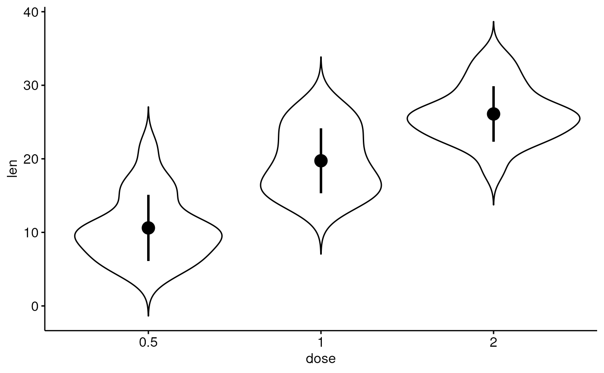

add summary statistics onto a ggplot.
add_summary( p, fun = "mean_se", error.plot = "pointrange", color = "black", fill = "white", group = 1, width = NULL, shape = 19, size = 1, linetype = 1, show.legend = NA, ci = 0.95, data = NULL, position = position_dodge(0.8) ) mean_se_(x, error.limit = "both") mean_sd(x, error.limit = "both") mean_ci(x, ci = 0.95, error.limit = "both") mean_range(x, error.limit = "both") median_iqr(x, error.limit = "both") median_hilow_(x, ci = 0.95, error.limit = "both") median_q1q3(x, error.limit = "both") median_mad(x, error.limit = "both") median_range(x, error.limit = "both")
Arguments
| p | a ggplot on which you want to add summary statistics. |
|---|---|
| fun | a function that is given the complete data and should return a data frame with variables ymin, y, and ymax. Allowed values are one of: "mean", "mean_se", "mean_sd", "mean_ci", "mean_range", "median", "median_iqr", "median_hilow", "median_q1q3", "median_mad", "median_range". |
| error.plot | plot type used to visualize error. Allowed values are one of
|
| color | point or outline color. |
| fill | fill color. Used only whne |
| group | grouping variable. Allowed values are 1 (for one group) or a character vector specifying the name of the grouping variable. Used only for adding statistical summary per group. |
| width | numeric value between 0 and 1 specifying bar or box width.
Example width = 0.8. Used only when |
| shape | point shape. Allowed values can be displayed using the function
|
| size | numeric value in [0-1] specifying point and line size. |
| linetype | line type. |
| show.legend | logical. Should this layer be included in the legends? NA,
the default, includes if any aesthetics are mapped. |
| ci | the percent range of the confidence interval (default is 0.95). |
| data | a |
| position | position adjustment, either as a string, or the result of a call to a position adjustment function. Used to adjust position for multiple groups. |
| x | a numeric vector. |
| error.limit | allowed values are one of ("both", "lower", "upper", "none") specifying whether to plot the lower and/or the upper limits of error interval. |
Functions
add_summary: add summary statistics onto a ggplot.mean_se_: returns themeanand the error limits defined by thestandard error. We used the namemean_se_() to avoid maskingmean_se().mean_sd: returns themeanand the error limits defined by thestandard deviation.mean_ci: returns themeanand the error limits defined by theconfidence interval.mean_range: returns themeanand the error limits defined by therange = max - min.median_iqr: returns themedianand the error limits defined by theinterquartile range.median_hilow_: computes the sample median and a selected pair of outer quantiles having equal tail areas. This function is a reformatted version ofHmisc::smedian.hilow(). The confidence limits are computed as follow:lower.limits = (1-ci)/2percentiles;upper.limits = (1+ci)/2percentiles. By default (ci = 0.95), the 2.5th and the 97.5th percentiles are used as the lower and the upper confidence limits, respectively. If you want to use the 25th and the 75th percentiles as the confidence limits, then specifyci = 0.5or use the functionmedian_q1q3().median_q1q3: computes the sample median and, the 25th and 75th percentiles. Wrapper around the functionmedian_hilow_()usingci = 0.5.median_mad: returns themedianand the error limits defined by themedian absolute deviation.median_range: returns themedianand the error limits defined by therange = max - min.
Examples
# Add mean_sd add_summary(p, "mean_sd")